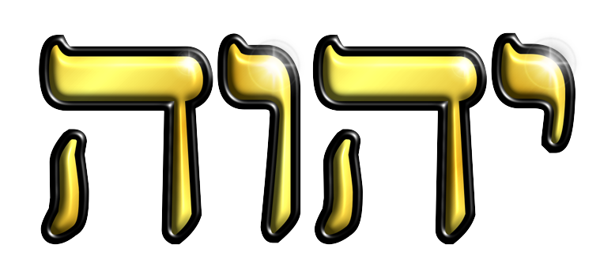
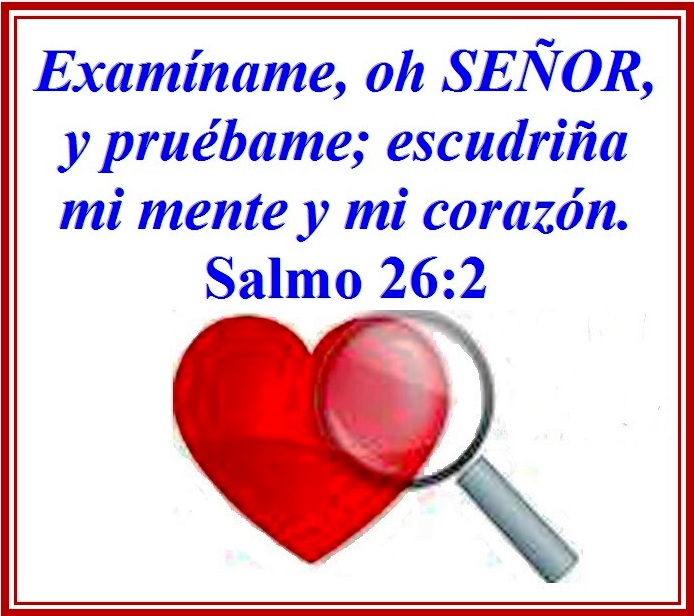

Ejercicio 1: Menú Hamburguesa
Para este primer ejercicio vamos a diseñar el contenido HTML de nuestra página web de ejercicios del DOM y convertir su contenido en un menú hamburguesa "dinámico" para su fácil navegación. El cual estará disponible en pantallas inferiores a 1024 pixeles, te invito a usar el inspector de tu navegador y comprobarlo o abre esta página desde tu celular y lo veras.
Toda la Honra y la Gloria sean para YHWH Zevaot (YHWH de los Ejércitos).
Ejercicio 2: Reloj Digital y Alarma Sonora
Para este ejercicio se elaborará un reloj digital que se mostrará en pantalla cuando lo indiquemos y se ocultará cuando lo indiquemos. De igual forma tendremos una alarma sonora que se activará al pulsar el botón correspondiente y se cancelará con otro botón.
El Eterno YHWH creo el tiempo y el espacio en el que vivimos y por su compasión vivimos y respiramos.
¡Bendito y Exaltado sea Su Nombre por siempre. Omen!
Ejercicio 3: Eventos del Teclado
En este ejercicio se trabajarán los eventos del teclado para desencadenar una aplicación que mueva un elemento circular sobre un plano negro usando las flechas de desplazamiento del teclado; Izquierda (⬅), arriba (⬆), derecha (➡) y abajo (⬇).
Si presionas las teclas "Alt + A" accederás a un mensaje de alerta, si presionas "Alt + C" accederás a una ventana de confirmación y si presionas "Alt + P" saldrá una ventana tipo prompt para ingresar un valor.
El movimiento es imprescindible para la vida y el Eterno nos hizo para ser seres dinámicos y activos, gozando de sus bendiciones en santidad y justicia.
Ejercicio 4: Cuenta Regresiva
En este ejercicio elaboraremos una cuenta regresiva que nos recuerde un evento importante de nuestras vidas, actualiza la página y velo por ti mismo.
El Shabbat y las fiestas son un mandamiento, una señal y un pacto de nuestro Elohim YHWH con su pueblo escogido, son días muy especiales para compartir y bendecir, además conmemoramos las grandes obras de nuestro Abba al haber creado todo lo que conocemos y damos Gloria a Su Nombre y decimos "Todah Raba Abba Kadosh".
Ejercicio 5: Botón Scroll Arriba
Para este ejercicio elaboraremos un botón que detecte cuando nos hayamos desplazado hacia bajo en la ventana de navegación y nos permita regresar al inicio al pulsarlo.
Pulse el botón ^, ubicado en la parte inferior izquierda de la ventana junto al botón de temas, para regresar al inicio.

En Su Torah el Eterno siempre nos invita a retornar al buen camino, a volvernos a Él, a iniciar una nueva vida alejada del pecado y cumpliendo Su Torah con todo nuestro 💖, con toda nuestra alma y con todas nuestras 💪; lo cual es nuestro culto racional y con un verdadero propósito.
¡Exaltado sea el Abba Kadosh (Padre Santo)!
Ejercicio 6: Botón Temas
En este ejercicio vamos a crear un botón que nos permita alternar entre un tema claro y uno oscuro, lo cual es muy usado por los usurios hoy en día. Aplicando los métodos ya conocidos para modificar, agregar y remover atributos y preopiedades CSS desde el archivo JavaScript.
Para Cambiar el tema presione en el botón 🌙 ubicado en la parte inferior izquierda para probar esta ingeniosa herramienta y cambiar el tema claro por un tema oscuro.
El Eterno en su eterna Sabiduría y Compasión hizo las dos grandes lumbreras del cielo, el ☀️ para que señoreará el día y la 🌙 para que señoreará la noche demostrando Su gran Poder y Gloria, ¡HalleluYah!.
Ejercicio 7: Local Storage
Este ejercicio esta relacionado con el ejercicio anterior y lo que busca es permitir al usuario conservar el tema de mayor agrado para posteriores visitas a nuestro sitio web, mejorando su experiencia y estableciendo parámetros definidos por él. Para este fin haremos uso de la herramienta Local Storage de windows que permite almacenar variables en el navegador y ser invocadas cuando estas se requieran. Siempre y cuando se haga la conexión desde el mismo dispositivo.
Presiona el botón 🌙 y seguidamente actualiza 🔄 el navegador o cierra la ventana ❌ y vuelve a abrirla y notarás que los cambios realizados en el tema se conservan de acuerdo a la última visita.

En las Escrituras dice: "ante toda cosa guardada, guarda tu corazón, porque de él mana la Vida". Es decir, si retenemos y conservamos las enseñanzas de la Torah (Instrucción de vida) en nuestras mentes y nuestros corazones seremos verdaderamente sabios y conoceremos (tener comunión íntima) al Elohim de Israel.
¡YHWH es Su Nombre!
Ejercicio 8: Reponsive con JavaScript
Para este ejercicio debemos usar el modo responsive para que el contenido de el video y el mapa de abajo se visualicen en iframes y a partir de resoluciones menores a 600 pixeles se visualicen en forma de anclas o links con el fin de garantizar una interfaz mas simple y que ahorre en consumo de datos.

No importa de que pueblo seamos, todos debemos llevar la TORAH en nuestros corazones.
Ejercicio 9: Responsive Tester
En este ejercicio abriremos una ventana con la altura y el ancho indicados por el usuario para realizar una prueba responsive de una determinada página web
Complete los campos requeridos para abrir una nueva ventana con los valores indicados
"Porque no es justo delante de Elohim quien oye la Torah, sino aquel que oyéndola la lleva por obra"
Ejercicio 10: Detección de Dispositivos (User Agent)
En este ejercicio más que un reto es conocer y explorar el objeto navigator de window ya que en este encontramos información muy importante sobre el dispositivo del cual se conecta nuestro usuario.
El origen, ¿de dónde venimos y hacia dónde vamos? es importante saberlo y como dice el proverbio,
"EL fin de todo discurso es este; Teme a Elohim YHWH y guarda Su Torah, porque esto es el TODO del hombre"
Ejercicio 11: Detección de la Conexión
En este ejercicio la finalidad es programar un mensaje que aparezca cuando se pierda la conexión a internet y otro mensaje cuando se restablezca la conexión para mantener informado al usuario de su estado de conexión.
La Torah dice: "El Poder invisible de nuestro Elohim, se hace claramente visible en su creación", entonces busquemos con todo nuestro corazón, alma y ser, tener comunión con Él para tener bendeción de Su parte.
Ejercicio 12: Detección de Cámara Web
Para este ejercicio se usará el objeto navigator con su propiedad mediaDevices para detectar dispositivos de audio y video conectados al PC y por medio del método getUserMedia capturar la salida de dichos dispositivos en la ventana del navegador, similar a lo que hacen las aplicaciones de Teams, Zoom y Meet.
El día que el Eterno decida juzgar a todas las naciones, se abrirán los libros de los Cielos y en ellos estarán grabadas todas las obras que hicimos en vida, será como ver una película de nuestras vidas y no habrá justificación alguna para ocultar las injusticias y será manifiesta la Justicia Verdadera de nuestro Creador YHWH.
Ejercicio 13: Geolocalización
En este ejercicio usaremos la propiedad y métodos de geolocation para poder acceder a la ubicación de tu dispositivo por lo cual debes permitir a esta página acceder a dicha información cuando te lo pida 😊.
¿Por qué "Elohim"?, la Naturaleza Divina del Eterno esta basada en atributos (Elohim) entre los cuales podemos mencionar Su Omniprescencia (Su Presencia esta en todos lados), Su Omnisciencia (Conocimiento Absoluto; Todo lo sabe) y Su Omnipotencia (Poder Absoluto; Tiene todo el Poder).
A Él sea toda la Honra, toda la Gloria y todo el Poder por la eternidad ¡omén!.
Ejercicio 14: Filtros de Búsqueda
En este ejercicio se pretende programar una función de búsqueda que permita filtrar las tarjetas de acuerdo al texto contenido en cada una de ellas. Se usará una etiqueta input para capturar el valor a buscar.
Ingrese el texto a buscar
Buscar es algo muy importante, porque es la forma como manifestamos sin palabras el interés o la importancia que algo representa y la Torah no es ajena a este principio y por eso esta escrito: "El que busca encuentra".
Ejercicio 15: Sorteo Digital
El siguiente ejercicio tiene como finalidad realizar un sorteo y elegir un ganador al azar de la siguiente lista. Para empezar haz click en el botón obtener ganador para realizar el sorteo y ver quién es el feliz ganador.
- JavaScript
- PHP
- JAVA
- C
- Phyton
- Ruby
- Go
- Visual Basic
- Rust
- Perl
En la Torah se le denomina "echar suertes", y el Eterno permitió su uso en momentos muy específicos, como por ejemplo al momento de repartir la tierra prometida entre las 12 tribus de Israel, ya que ellos no podían dudar que el Eterno era quien decidía a través de los "sorteos" cuál era la heredad para cada casa. Sin embargo el hombre ha empleado los "sorteos" con otros fines que no son agradables a los ojos del Elohim Todopoderoso de Israel. Su práctica sólo esta determinada cuando es voluntad del Abba (Padre).
Ejercicio 16: Responsive Slider
En este ejercicio el reto es programar una función que genere un carrusel de elementos el cual a su vez debe ser responsive para que se adapte a distintos tipos de pantallas según el dispositivo que uses.
La Montaña
El Eterno es nuestra montaña, nuestro refugio y la roca donde nos sustentamos. Los montes le pertencen y fue en el monte Sinaí que nos dió su Torah, la cual es lumbrera a nuestros pies y lámpara en el camino.
El Bosque
El bosque representa el flujo de la vida y la energía que el Eterno en su infinita sabiduría controla y mantiene en constante ciclo, es por esto que cada momento de nuestras vidas es considerado un milagro y una maravilla hecha por Sus Benditas Manos.

La Torah nos enseña, "Buscad primeramente el Reino de los Cielos y todo lo demás vendrá por añadidura", por lo cual debemos buscar sabiduría para vivir rectamente y la sabiduría traerá frutos terrenales que no esperábamos.
Ejercicio 17: Scroll Spy
Con este ejercicio buscamos hacer aun más amigable el entorno de nuestra página web usando un menú responsivo, para el caso de pantallas con tamaños superiores a los 1024 pixeles el menú estará ubicado a la derecha de la ventana con la función del scroll espía que permite al usuario visualizar en qué área de la página se encuentra y con links de acceso directo a cada apartado. Para el caso de pantallas con un tamaño menor a 1024 pixeles se seguirá empleando nuestro querido 😊 menú hamburguesa. ¡Ahora, ¿qué esperas?! usa el inspector de tu navegador para cambiar el tamaño de la pantalla y pruébalo por ti mismo.
El Eterno en su Palabra nos enseña que uno de sus atributos es ser Omnisciente, es decir, que todo lo sabe y nada le hes oculto, ni aún nuestro corazón y por eso debemos ser sinceros al acercarnos a Él porque el conoce las intenciones del corazón.
Ejercicio 18: Video Inteligente
Para este ejercicio aplicaremos el spy-scroll para detectar cuando la ventana tenga en su foco el 100% del video y este se reproducirá automáticamente y cuando salga del foco se pausará. Prueba a continuación que el concepto de video inteligente es una gran herramienta que facilita la interacción del usuario con la página web.
Taz el perro más "feo" 😊🐶
Hallel: Exaltar a Elohim (Kehila Gozo y Paz)
Es importante tener plenitud en nuestras vidas, esto significa tener completa comunión con YHWH nuestro Elohim.
Ejercicio 19: Formulario de Contacto (Validaciones)
En este ejercicio validaremos la información ingresada en los campos del formulario y usaremos los conceptos de las expresiones regulares y aprovecharemos al máximo los atributos de las etiquetas de los formularios, tales como el atributo "pattern" para ingresar expresiones regulares que se validaran desde el css con las propiedades de estas etiquetas de HMTL5.
Envíanos tus comentarios
Para tener crecimiento espiritual es necesario estar constantemente autoevaluándonos por medio de la Torah que es nuestra instrucción de vida, y esforzarnos de corazón en corregir los errores que encontremos en nosotros, esta es la parte más difícil del proceso porque el orgullo siempre estará buscando la forma de ocultar nuestras fallas.
Ejercicio 20: Narrador
En este último ejercicio haremos uso de la API del reconocimiento de voz, específicamente el speechSynthesis con el cual podemos indicarle al sistema que lea un texto indicado, ingresa un texto en el cuadro de abajo y pruébalo.
El Eterno prometió escribir su Torah en nuestros corazones y es por medio de ella que nos habla en su eterna compasión para dar luz a nuestras vidas, ese es su Pacto Renovado. Omen ve Omen.